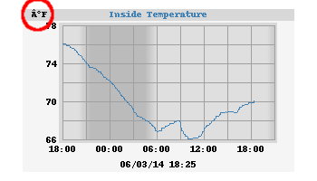

Software problems¶
Nothing in the log file¶
As it is running, WeeWX periodically sends status information, failures, and other things to your system's logging facility. They typically look something like this (the first line is not actually part of the log):
DATE TIME HOST weewx[PID] LEVL MESSAGE
Feb 8 04:25:16 hummingbird weewx[6932] INFO weewx.manager: Added record 2020-02-08 04:25:00 PST (1581164700) to database 'weewx.sdb'
Feb 8 04:25:16 hummingbird weewx[6932] INFO weewx.manager: Added record 2020-02-08 04:25:00 PST (1581164700) to daily summary in 'weewx.sdb'
Feb 8 04:25:17 hummingbird weewx[6932] INFO weewx.restx: PWSWeather: Published record 2020-02-08 04:25:00 PST (1581164700)
Feb 8 04:25:17 hummingbird weewx[6932] INFO weewx.restx: Wunderground-PWS: Published record 2020-02-08 04:25:00 PST (1581164700)
Feb 8 04:25:17 hummingbird weewx[6932] INFO weewx.restx: Windy: Published record 2020-02-08 04:25:00 PST (1581164700)
Feb 8 04:25:17 hummingbird weewx[6932] ERROR weewx.restx: WOW: Failed to publish record 2020-02-08 04:25:00 PST (1581164700): Failed upload after 3 tries
The location of this logging file varies from system to system, but it is
typically in /var/log/syslog or /var/log/messages.
However, some systems default to saving only warning or critical information, so
INFO messages from WeeWX may not appear. If this happens to you, check your
system logging configuration. On Debian systems, look in /etc/rsyslog.conf. On
Redhat systems, look in /etc/syslog.conf.
ConfigObj errors¶
These are errors in the configuration file. Two are very common. Incidentally, these errors are far easier to diagnose when WeeWX is run directly from the command line than when it is run as a daemon.
Exception configobj.DuplicateError¶
This error is caused by using an identifier more than once in the configuration file. For example, you may have inadvertently listed your FTP server twice:
[Reports]
[[FTP]]
... (details elided)
user = fred
server = ftp.myhost.com
password = mypassword
server = ftp.myhost.com # OOPS! Listed it twice!
path = /weather
...
Generally, if you encounter this error, the log file will give you the line number it happened in:
Apr 24 12:09:15 raven weewx[11480]: wxengine: Error while parsing configuration file /home/weewx/weewx.conf
Apr 24 12:09:15 raven weewx[11480]: wxengine: Unable to initialize main loop:
Apr 24 12:09:15 raven weewx[11480]: **** Duplicate keyword name at line 254.
Apr 24 12:09:15 raven weewx[11480]: **** Exiting.
Exception configobj.NestingError¶
This is a very similar error, and is caused by a misformed section nesting. For example:
[Reports]
[[FTP]]]
...
Note the extra closing bracket on the subsection FTP.
No barometer data¶
If everything appears normal except that you have no barometer data, the problem
may be a mismatch between the unit system used for service StdConvert and the
unit system used by service StdQC. For example:
[StdConvert]
target_unit = METRIC
...
[StdQC]
[[MinMax]]
barometer = 28, 32.5
The problem is that you are requiring the barometer data to be between 28 and
32.5, but with the unit system set to METRIC, the data will be in the range
990 to 1050 or so!
The solution is to change the values to match the units in StdConvert, or,
better yet, specify the units in MinMax. For example:
[StdConvert]
target_unit = US
...
[StdQC]
[[MinMax]]
barometer = 950, 1100, mbar
Exception Cheetah.NameMapper.NotFound¶
If you get errors of the sort:
Apr 12 05:12:32 raven reportengine[3074]: filegenerator: Caught exception "<class 'NameMapper.NotFound'>"
Apr 12 05:12:32 raven reportengine[3074]: **** Message: "cannot find 'fubar' in template /home/weewx/skins/Standard/index.html.tmpl"
Apr 12 05:12:32 raven reportengine[3074]: **** Ignoring template and continuing.
you have a tag in your template that WeeWX does not recognize. In this example,
it is the tag $fubar in the template
/home/weewx/skins/Standard/index.html.tmpl.
Dots in the plots¶
If you see dots instead of lines in the daily plots, you might want to change the graphing options or adjust the station's archive interval.
In a default configuration, a time period greater than 1% of the displayed timespan is considered to be a gap in data. So when the interval between data points is greater than about 10 minutes, the daily plots show dots instead of connected points.
Change the option
line_gap_fraction
in skin.conf to control how much time is considered a break in data.
As for the archive interval, check the log file for an entry like this soon after WeeWX starts up:
Dec 30 10:54:17 saga weewx[10035]: wxengine: The archive interval in the configuration file
(300) does not match the station hardware interval (1800).
Dec 30 10:54:17 saga weewx[10035]: wxengine: Using archive interval of 1800
In this example, the interval specified in weewx.conf is 5 minutes, but the
interval specified in the station hardware is 30 minutes. When the interval in
weewx.conf does not match the station's hardware interval, WeeWX defers to the
station's interval.
Use the weectl device utility to change
the station's interval.
Spikes in the graphs¶
Occasionally you may see anomalous readings, typically manifested as spikes in the graphs. The source could be a flaky serial/USB connection, radio or other interference, a cheap USB-Serial adapter, low-quality sensors, or simply an anomalous reading.
Sensor quality matters. It is not unusual for some low-end hardware to report odd sensor readings occasionally (once every few days). Some sensors, such as solar radiation/UV, have a limited lifespan of about 5 years. The (analog) humidity sensors on older Vantage stations are known to deteriorate after a few years in wet environments.
If you frequently see anomalous data, first check the hardware.
To keep bad data from the database, add a quality control (QC) rule such as
Min/Max bounds. See the section
[StdQC] for details.
To remove bad data from the database, see the Wiki article Cleaning up old "bad" data.
'Database is locked' error¶
This seems to be a problem with the Raspberry Pi, when using SQLite. There is no analogous problem with MySQL databases. You will see errors in the system log that looks like this:
Feb 12 07:11:06 rpi weewx[20930]: **** File "/usr/share/weewx/weewx/archive.py", line 118, in lastGoodStamp
Feb 12 07:11:06 rpi weewx[20930]: **** _row = self.getSql("SELECT MAX(dateTime) FROM %s" % self.table)
Feb 12 07:11:06 rpi weewx[20930]: **** File "/usr/share/weewx/weewx/archive.py", line 250, in getSql
Feb 12 07:11:06 rpi weewx[20930]: **** File "/usr/share/weewx/weedb/sqlite.py", line 120, in execute
Feb 12 07:11:06 rpi weewx[20930]: **** raise weedb.OperationalError(e)
Feb 12 07:11:06 rpi weewx[20930]: **** OperationalError: database is locked
Feb 12 07:11:06 rpi weewx[20930]: **** _cursor.execute(sql, sqlargs)
Feb 12 07:11:06 rpi weewx[20930]: **** File "/usr/share/weewx/weedb/sqlite.py", line 120, in execute
Feb 12 07:11:06 rpi weewx[20930]: **** raise weedb.OperationalError(e)
Feb 12 07:11:06 rpi weewx[20930]: **** OperationalError: database is locked
We are still trying to decipher exactly what the problem is, but it seems that (many? most? all?) implementations of the SQLite 'C' access libraries on the RPi sleep for a full second if they find the database locked. This gives them only five chances within the 5-second timeout period before an exception is raised.
Not all Raspberry Pis have this problem. It seems to be most acute when running big templates with lots of queries, such as the forecast extension.
There are a few possible fixes:
-
Increase the option
timeout. -
Use a high quality SD card in your RPi. There seems to be some evidence that faster SD cards are more immune to this problem.
-
Trim the size of your templates to minimize the number of queries necessary.
None of these 'fixes' are very satisfying, and we're trying to come up with a more robust solution.
Funky symbols in plots¶
If your plots have strange looking symbols for units, such as degrees Fahrenheit (°F), that look something like this:

Then the problem may be that you are missing the fonts specified for the option unit_label_font_path in your skin.conf file and, instead, WeeWX is substituting a default font, which does not support the Unicode character necessary to make a degree sign. Look in section [ImageGenerator] for a line that looks like:
unit_label_font_path = /usr/share/fonts/truetype/freefont/FreeMonoBold.ttf
Make sure that the specified path
(/usr/share/fonts/truetype/freefont/FreeMonoBold.ttf in this case) actually
exists. If it does not, on Debian operating systems (such as Ubuntu), you may be
able to install the necessary fonts:
sudo apt-get install fonts-freefont-ttf
sudo fc-cache -f -v
(On older systems, the package fonts-freefont-ttf may be called
ttf-freefont). The first command installs the "Truetype" fonts, the second
rebuilds the font cache. If your system does not have the fc-cache command,
then install it from the fontconfig package:
sudo apt-get install fontconfig
If none of this works, or if you are on a different operating system, then you
will have to change the option unit_label_font_path to point to something on
your system which does support the Unicode characters you plan to use.
Exception UnicodeEncodeError¶
This problem is closely related to the "Funky symbols" problem above. In this case, you may see errors in your log that look like:
May 14 13:35:23 web weewx[5633]: cheetahgenerator: Generated 14 files for report StandardReport in 1.27 seconds
May 14 13:35:23 web weewx[5633]: reportengine: Caught unrecoverable exception in generator weewx.imagegenerator.ImageGenerator
May 14 13:35:23 web weewx[5633]: **** 'ascii' codec can't encode character u'\xe8' in position 5: ordinal not in range(128)
May 14 13:35:23 web weewx[5633]: **** Traceback (most recent call last):
May 14 13:35:23 web weewx[5633]: **** File "/usr/share/weewx/weewx/reportengine.py", line 139, in run
May 14 13:35:23 web weewx[5633]: **** obj.start()
May 14 13:35:23 web weewx[5633]: **** File "/usr/share/weewx/weewx/reportengine.py", line 170, in start
May 14 13:35:23 web weewx[5633]: **** self.run()
May 14 13:35:23 web weewx[5633]: **** File "/usr/share/weewx/weewx/imagegenerator.py", line 36, in run
May 14 13:35:23 web weewx[5633]: **** self.gen_images(self.gen_ts)
May 14 13:35:23 web weewx[5633]: **** File "/usr/share/weewx/weewx/imagegenerator.py", line 220, in gen_images
May 14 13:35:23 web weewx[5633]: **** image = plot.render()
May 14 13:35:23 web weewx[5633]: **** File "/usr/share/weewx/weeplot/genplot.py", line 175, in render
May 14 13:35:23 web weewx[5633]: **** self._renderTopBand(draw)
May 14 13:35:23 web weewx[5633]: **** File "/usr/share/weewx/weeplot/genplot.py", line 390, in _renderTopBand
May 14 13:35:23 web weewx[5633]: **** top_label_size = draw.textsize(top_label, font=top_label_font)
May 14 13:35:23 web weewx[5633]: **** File "/usr/lib/python2.7/dist-packages/PIL/ImageDraw.py", line 278, in textsize
May 14 13:35:23 web weewx[5633]: **** return font.getsize(text)
May 14 13:35:23 web weewx[5633]: **** UnicodeEncodeError: 'ascii' codec can't encode character u'\xe8' in position 5: ordinal not in range(128)
May 14 13:35:23 web weewx[5633]: **** Generator terminated...
This is frequently caused by the necessary Truetype fonts not being installed on your computer and, instead, a default font is being substituted, which only knows how to plot ASCII characters. The cure is as before: install the font.
Data is archived but some/all reports do not run¶
If WeeWX appears to be running normally but some or all reports are not being
run, either all the time or periodically, the problem could be the inadvertant
use or incorrect setting of the report_timing option in weewx.conf. The
report_timing option allows the user to specify when some or all reports are
run (see Scheduling report generation).
By default, the option
report_timing
is disabled and all reports are run each archive period.
To see if the report_timing option is causing reports to be skipped, inspect
the log file. Any reports that are skipped due to the report_timing option
will be logged as follows:
Apr 29 09:30:17 rosella weewx[3319]: reportengine: Report StandardReport skipped due to report_timing setting
If reports are being incorrectly skipped due to report_timing, then edit
weewx.conf and check for a report_timing option in [StdReport]. Either
remove all occurrences of report_timing to run all reports each archive
period, or confirm the correct use and setting of the report_timing option.
The wrong reports are being skipped by report_timing¶
If the option
report_timing
is being used, and the results are not as expected, there may be an error in the
report_timing option. If there are errors in the report_timing parameter,
the report will be run on each archive interval. First check the report_timing
option parameters to ensure they are valid and there are no additonal spaces or
other unwanted characters. Then check that the parameters are correctly set for
the desired report generation times. For example, is the correct day of the week
number being used if limiting the day of the week parameter. Refer to the
section Scheduling report generation.
Check the log file for any entries relating to the reports concerned. Errors in
the report_timing parameter and skipped reports are logged only when debug=1
in weewx.conf.